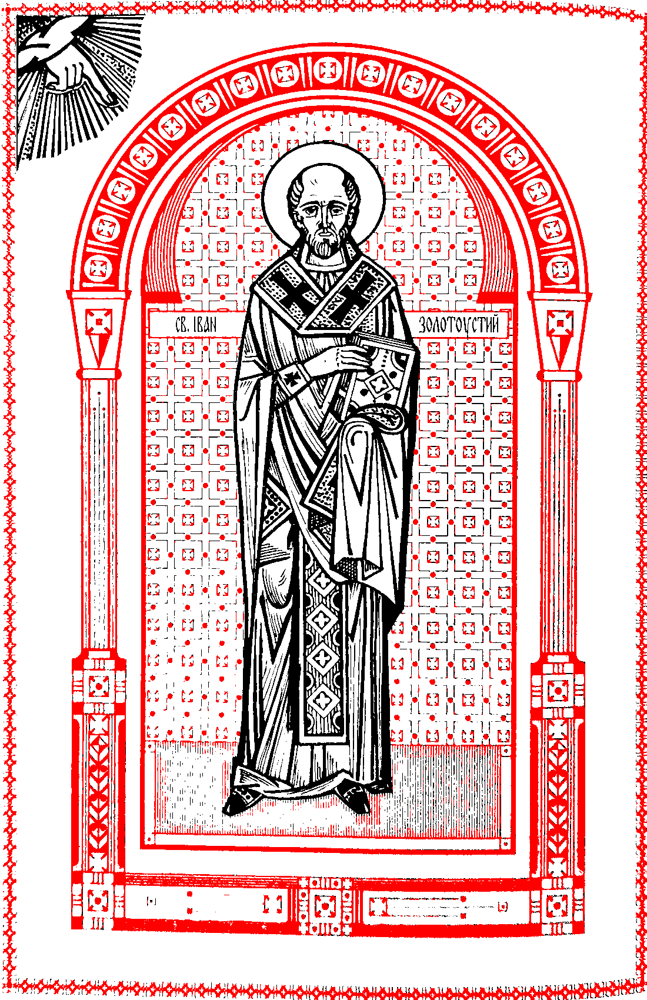

БОЖЕСТВЕННА ЛІТУРГІЯ
СВЯТОГО ОТЦЯ НАШОГО ІВАНА ЗОЛОТОУСТОГО
✠
Диякон: Благослови́, влади́ко.
Священник: Благослове́нне ца́рство Отця́, і Си́на, і Свято́го Ду́ха, ни́ні, і повсякча́с, і на ві́ки ві́ків.
Вірні: Амі́нь.
Диякон: У ми́рі Господе́ві помолі́мся.
Вірні: Го́споди, поми́луй.
За мир з висо́т і спасі́ння душ на́ших Господе́ві помолі́мся.
Вірні: Го́споди, поми́луй.
За мир усього́ сві́ту, до́брий стан святи́х Бо́жих церко́в і з’єдна́ння всіх Господе́ві помолі́мся.
Вірні: Го́споди, поми́луй.
За святи́й храм цей і тих, що з ві́рою, благогові́нням і стра́хом Бо́жим вхо́дять до ньо́го, Господе́ві помолі́мся.
Вірні: Го́споди, поми́луй.
За святі́шого вселе́нського архиєре́я ім’я, па́пу Ри́мського, і за блаженні́шого патрія́рха на́шого ім’я, і за преосвяще́ннішого архиєпи́скопа й митрополи́та на́шого кир ім’я, і за боголюби́вого єпи́скопа на́шого кир ім’я, че́сне пресві́терство, у Христі́ дия́конство, за весь при́чет і люде́й Господе́ві помолі́мся.
Вірні: Го́споди, поми́луй.
За Бо́гом бере́жений наро́д наш, за правлі́ння і все ві́йсько Господе́ві помолі́мся.
Вірні: Го́споди, поми́луй.
За мі́сто це (за село́ це, за святу́ оби́тель цю), і за ко́жне село́, мі́сто, краї́ну, і за тих, що ві́рою живу́ть у них, Господе́ві помолі́мся.
Вірні: Го́споди, поми́луй.
За до́бре полі́ття, за врожа́й плоді́в земни́х і часи́ мирні́ Господе́ві помолі́мся.
Вірні: Го́споди, поми́луй.
За тих, що пла́вають, подорожу́ють, за неду́жих, стражда́ючих, полоне́них — і за спасі́ння їх Господе́ві помолі́мся.
Вірні: Го́споди, поми́луй.
Коли буває вселенське поминання спочилих, додається це:
За душі́ всіх відві́ку у правові́р’ї, наді́ї воскресі́ння і життя́ ві́чного спочи́лих отці́в і матері́в, браті́в і сесте́р на́ших, фунда́торів і доброчи́нців свято́го хра́му цього́ (святої́ оби́телі ціє́ї), батькі́в і рі́дних на́ших по кро́ві, що тут лежа́ть, тут упи́сані, і повсю́ди правосла́вних христия́н, і за блаже́нний упокі́й їх Господе́ві помолі́мся.
Вірні: Го́споди, поми́луй.
Щоб неосу́дно ста́ти їм на страшно́му суді́ Христо́вому і осели́ти душі́ ї́хні у краї́ні живи́х, у мі́сці сві́тлому, де всі святі́ пра́ведні спочива́ють, Господе́ві помолі́мся.
Вірні: Го́споди, поми́луй.
А якщо осібне:
За слугу́ Бо́жого (слугу́ Бо́жу, слуг Бо́жих) ім’я, і блаже́нну па́м’ять його́ (її́, їх), та щоб прости́тися вся́кому прогрі́шенню його́ (її́, ї́хньому), доброві́льному і недоброві́льному, Господе́ві помолі́мся.
Вірні: Го́споди, поми́луй.
Щоб неосу́дно ста́ти йому́ (їй, їм) на страшно́му суді́ Христо́вому і осели́ти ду́шу його́ (її́, душі́ ї́хні) у краї́ні живи́х, у мі́сці сві́тлому, де всі святі́ пра́ведні спочива́ють, Господе́ві помолі́мся.
Вірні: Го́споди, поми́луй.
Щоб ви́зволитися нам від уся́кої скорбо́ти, гні́ву й нужди́, Господе́ві помолі́мся.
Вірні: Го́споди, поми́луй.
Заступи́, спаси́, поми́луй і охорони́ нас, Бо́же, Твоє́ю благода́ттю.
Вірні: Го́споди, поми́луй.
Пресвяту́, пречи́сту, преблагослове́нну, сла́вну Влади́чицю на́шу Богоро́дицю і присноді́ву Марі́ю, з усіма́ святи́ми пом’яну́вши, сами́х себе́, і оди́н о́дного, і все життя́ на́ше Христу́ Бо́гові відда́ймо.
Вірні: Тобі́, Го́споди.
Священник говорить тихо молитву першого антифону:
Го́споди Бо́же наш, Твоя́ вла́да несказа́нна і сла́ва неося́жна, Твоя́ ми́лість безмі́рна і любо́в до люде́й невимо́вна. Сам, Влади́ко, з добросерде́чности Своє́ї спогля́нь на нас і на цей святи́й храм, і вчини́ з на́ми і ти́ми, що мо́ляться з на́ми, бага́ті ми́лості Твої́ і щедро́ти Твої́.
Виголошення:
Бо Тобі́ нале́жить уся́ка сла́ва, честь і поклоні́ння, Отцю́, і Си́ну, і Свято́му Ду́хові, ни́ні, і повсякча́с, і на ві́ки ві́ків.
Вірні: Амі́нь.
Диякон поклонившись, відступає від свого місця і стоїть перед іконою Христовою, тримаючи орар трьома пальцями правої руки.
Співці співають перший антифон1.
Повсякденний
Бла́го є іспові́дувати Го́спода, і співа́ти і́мені Твоє́му, Всеви́шній.
Молитва́ми Богоро́диці, Спа́се, спаси́ нас.
Звіща́ти вдо́світа ми́лість Твою́ і і́стину Твою́ — на вся́ку ніч.
Молитва́ми Богоро́диці, Спа́се, спаси́ нас.
Бо пра́вий Госпо́дь Бог наш, і нема́є непра́вди в Нім.
Молитва́ми Богоро́диці, Спа́се, спаси́ нас.
Сла́ва Отцю́, і Си́ну, і Свято́му Ду́хові, і ни́ні, і повсякча́с, і на ві́ки ві́ків. Амі́нь.
Якщо скорочується Літургію, перейди до Єдинородний Сину.
Молитва́ми Богоро́диці, Спа́се, спаси́ нас.
Воскресний
Воскли́кніте Господе́ві, вся зе́мле, співа́йте ж і́мені Його́, відда́йте сла́ву в хвалі́ Йому́!
Молитва́ми Богоро́диці, Спа́се, спаси́ нас.
Скажі́те Бо́гові: як страшні́ ді́ла Твої́! У мно́жестві си́ли Твоєї́ лести́тимуть Тобі́ вороги́ Твої́.
Молитва́ми Богоро́диці, Спа́се, спаси́ нас.
Вся земля́ неха́й покло́ниться Тобі́ і співа́є Тобі́, неха́й же співа́є і́мені Твоє́му, Всеви́шній!
Молитва́ми Богоро́диці, Спа́се, спаси́ нас.
Сла́ва Отцю́, і Си́ну, і Свято́му Ду́хові, і ни́ні, і повсякча́с, і на ві́ки ві́ків. Амі́нь.
Якщо скорочується Літургію, перейди до Єдинородний Сину.
Молитва́ми Богоро́диці, Спа́се, спаси́ нас.
По закінченні антифону диякон приходить і стає на звичайнім місці; поклонившись, мовить:2
Ще і ще в ми́рі Господе́ві помолі́мся.
Вірні: Го́споди, поми́луй.
Заступи́, спаси́, поми́луй і охорони́ нас, Бо́же, Твоє́ю благода́ттю.
Вірні: Го́споди, поми́луй.
Пресвяту́, пречи́сту, преблагослове́нну, сла́вну Влади́чицю на́шу Богоро́дицю і присноді́ву Марі́ю, з усіма́ святи́ми пом’яну́вши, сами́х себе́, і оди́н о́дного, і все життя́ на́ше Христу́ Бо́гові відда́ймо.
Вірні: Тобі́, Го́споди.
Молитва другого антифону:
Го́споди Бо́же наш, спаси́ наро́д Твій і благослови́ спадкоє́мство Твоє́, повноту́ Це́ркви Твоєї́ охорони́, освяти́ тих, що лю́блять красу́ до́му Твого́. Ти їх просла́в божестве́нною Твоє́ю си́лою і не залиши́ нас, що упова́ємо на Тебе́.
Виголошення:
Бо Твоя́ є вла́да і Твоє́ є ца́рство, і си́ла, і сла́ва, Отця́, і Си́на, і Свято́го Ду́ха, ни́ні, і повсякча́с, і на ві́ки ві́ків.
Вірні: Амі́нь.
Диякон поступає, як і на першій молитві.
Співці співають другий антифон:
Повсякденний
Госпо́дь воцари́вся, в красу́ зодягну́вся, зодягну́вся Госпо́дь си́лою і опоя́сався.
Молитва́ми святи́х Твої́х, Спа́се, спаси́ нас.
Він бо утверди́в вселе́нну, і вона́ не похитне́ться.
Молитва́ми святи́х Твої́х, Спа́се, спаси́ нас.
Свідо́цтва Твої́ достові́рні; до́мові Твоє́му подоба́є свя́тість, Го́споди, на многоту́ днів.
Молитва́ми святи́х Твої́х, Спа́се, спаси́ нас.
Сла́ва, і ни́ні... Єдиноро́дний Си́ну...
Воскресний
Бо́же, уще́дри нас і благослови́ нас, яви́ сві́тло лиця́ Твого́ на нас і поми́луй нас.
Молитва́ми святи́х Твої́х, Спа́се, спаси́ нас.
Щоб пізна́ти на землі́ путь Твою́, у всіх наро́дах — спасі́ння Твоє́.
Молитва́ми святи́х Твої́х, Спа́се, спаси́ нас.
Неха́й іспові́дують Тебе́ лю́ди, Бо́же, неха́й іспові́дують Тебе́ лю́ди всі.
Молитва́ми святи́х Твої́х, Спа́се, спаси́ нас.
Сла́ва Отцю́, і Си́ну, і Свято́му Ду́хові, і ни́ні, і повсякча́с, і на ві́ки ві́ків. Амі́нь.
Єдиноро́дний Си́ну і Сло́во Бо́же, безсме́ртний Ти, і зво́лив Ти спасі́ння на́шого ра́ди воплоти́тися від святої́ Богоро́диці і присноді́ви Марі́ї, незмі́нно ста́вши люди́ною. І розп’яти́й був Ти, Хри́сте Бо́же, сме́ртю смерть подола́в. Ти оди́н із Святої́ Тро́йці, рівносла́вимий з Отце́м і Святи́м Ду́хом, спаси́ нас.
Тоді диякон:
Ще і ще в ми́рі Господе́ві помолі́мся.
Вірні: Го́споди, поми́луй.
Заступи́, спаси́, поми́луй і охорони́ нас, Бо́же, Твоє́ю благода́ттю.
Вірні: Го́споди, поми́луй.
Пресвяту́, пречи́сту, преблагослове́нну, сла́вну Влади́чицю на́шу Богоро́дицю і присноді́ву Марі́ю, з усіма́ святи́ми пом’яну́вши, сами́х себе́, і оди́н о́дного, і все життя́ на́ше Христу́ Бо́гові відда́ймо.
Вірні: Тобі́, Го́споди.
Молитва третього антифону:
Го́споди Бо́же наш, що дарува́в нам ці спі́льні й суголо́сні молитви́ та обіця́в вво́лити проха́ння двох або́ трьох, що зго́дяться в ім’я Твоє́, сам і ни́ні спо́вни на пожи́ток проха́ння слуг Твої́х, подаю́чи нам і в тепе́рішньому ві́ці пізна́ння Твоєї́ і́стини, і в майбу́тньому дару́ючи життя́ ві́чне.
Виголошення:
Бо Ти благи́й і людинолю́бний Бог — і Тобі́ сла́ву возсила́ємо, Отцю́, і Си́ну, і Свято́му Ду́хові, ни́ні, і повсякча́с, і на ві́ки ві́ків.
Вірні: Амі́нь.
[Тут відчиняються святі двері на малий вхід.]
Співці співають третій антифон:
Прийді́те возра́дуємся Господе́ві, воскли́кнім Бо́гу, Спаси́телеві на́шому.
Якщо будень: Спаси́ нас, Си́ну Бо́жий, у святи́х ди́вний Ти, співа́ємо Тобі́: Алилу́я.
Якщо неділя: Спаси́ нас, Си́ну Бо́жий, що воскре́с із ме́ртвих, співа́ємо Тобі́: Алилу́я.
Іді́м пе́ред лице́м Його́ з іспові́данням, і псалма́ми воскли́кнім Йому́.
Спаси́ нас, Си́ну Бо́жий...
Бо Бог — вели́кий Госпо́дь і цар вели́кий по всій землі́.
Спаси́ нас, Си́ну Бо́жий...
Коли ж співці співають третій антифон (або Блаженні, якщо неділя), священник і диякон, ставши перед святою трапезою, творять три поклони. Тоді священник бере святе Євангеліє, дає дияконові, і йдуть праворуч поза престолом; і так, вийшовши північними дверми, зі свіченосцями попереду, роблять малий вхід. Ставши на звичайному місці, обидва схиляють голови і, коли диякон скаже: Господеві помолімся, священник тихо мовить молитву входу:
Влади́ко, Го́споди Бо́же наш, Ти встанови́в на не́бі чини́ й во́їнства а́нгелів і арха́нгелів на служі́ння Твоєї́ сла́ви. Учини́, щоб із на́шим вхо́дом відбу́вся вхід святи́х а́нгелів, які́ співслу́жать з на́ми і славосло́влять Твою́ бла́гість.
Бо Тобі́ нале́жить уся́ка сла́ва, честь і поклоні́ння, Отцю́, і Си́ну, і Свято́му Ду́хові, ни́ні, і повсякча́с, і на ві́ки ві́ків. Амі́нь.
Коли ж скінчиться молитва, мовить диякон до священника, показуючи правою рукою до сходу і тримаючи трьома пальцями орар:
Благослови́, влади́ко, святи́й вхід.
Священник, благословлячи, мовить:
Благослове́нний вхід святи́х Твої́х завжди́, ни́ні, і повсякча́с, і на ві́ки ві́ків. Амі́нь.
Потім диякон подає священникові цілувати святе Євангеліє.
Коли скінчиться антифон, диякон, ставши на середині перед священником, підносить святе Євангеліє і виголошує:
Прему́дрість, про́сті.
Тоді диякон, а за ним священник, входять у святий вівтар. Диякон кладе святе Євангеліє на святу трапезу, а співці співають:
Прийді́те поклоні́мся і припаді́м до Христа́.
У будень: Спаси́ нас, Си́ну Бо́жий, у святи́х ди́вний Ти, співа́ємо Тобі́: Алилу́я.
Якщо неділя: Спаси́ нас, Си́ну Бо́жий, що воскре́с із ме́ртвих, співа́ємо Тобі́: Алилу́я.
Тоді звичайні тропарі.
Священник мовить молитву Трисвятої пісні:
Бо́же святи́й, що в святи́х перебува́єш, Тебе́ трисвяти́м го́лосом серафи́ми оспі́вують, і херуви́ми славосло́влять, і всі небе́сні си́ли Тобі́ поклоня́ються. Ти з небуття́ до буття́ приві́в усе́, створи́в люди́ну на Свій о́браз і подо́бу, і всіма́ Свої́ми дара́ми її́ прикраси́в. Ти дає́ш ко́жному, хто про́сить, прему́дрість і ро́зум, і не пого́рджуєш грі́шником, а встанови́в покая́ння на спасі́ння. Ти сподоби́в нас, смире́нних і недосто́йних слуг Твої́х, і в цей час ста́ти пе́ред сла́вою свято́го Твого́ жерто́вника і нале́жне Тобі́ поклоні́ння і славосло́в’я прино́сити. Сам, Влади́ко, прийми́ із уст нас, грі́шних, трисвяту́ пі́сню і наві́дай нас у бла́гості Свої́й. Прости́ нам уся́ке прогрі́шення, доброві́льне і недоброві́льне, освяти́ на́ші душі́ і ті́ла, і дай нам побо́жно служи́ти Тобі́ всі дні життя́ на́шого, молитва́ми святої́ Богоро́диці і всіх святи́х, що відві́ку Тобі́ уго́дні були́.
Коли ж співці завершують спів останнього тропаря, диякон, схиливши голову і тримаючи трьома пальцями орар, мовить до священника:
Благослови́, влади́ко, час Трисвято́го.
Священник, знаменуючи його, виголошує:
Бо Ти святи́й єси́, Бо́же наш, і Тобі́ сла́ву возсила́ємо, Отцю́, і Си́ну, і Свято́му Ду́хові, ни́ні, і повсякча́с.
Диякон приходить ближче до святих дверей і, вказуючи орарем, мовить голосно до тих, що стоять у храмі:
І на ві́ки ві́ків.
Вірні: Амі́нь.
Разом із вірними Трисвяте3 мовлять також священник і диякон, творячи при цьому три поклони перед святою трапезою.
Тоді каже диякон до священника:
Повели, влади́ко.
І відходять до горного місця, а священник, відходячи, мовить:
Благослове́нний, хто йде в ім’я Госпо́днє.
Диякон: Благослови́, влади́ко, го́рне сіда́лище.
Священник благословляє горне місце, кажучи:
Благослове́нний Ти на престо́лі сла́ви ца́рства Твого́, що сиди́ш на херуви́мах, завжди́, ни́ні, і повсякча́с, і на ві́ки ві́ків. Амі́нь.
Відомо, що священникові не годиться виходити на горне місце, ані сидіти на ньому, але сидіти з південного боку від горного сідалища.
По закінченні Трисвятого диякон приходить перед святі двері і мовить:
Бу́дьмо ува́жні.
Священник виголошує: Мир усі́м.
Диякон: Прему́дрість, бу́дьмо ува́жні.
І співці співають прокімен зі стихом.
Потім диякон: Прему́дрість.
А читець — надпис апостола.
І знову диякон: Бу́дьмо ува́жні.
Коли ж завершать читання з Апостола, мовить священник:
Мир тобі́.
Диякон: Прему́дрість, бу́дьмо ува́жні.
Вірні: Алилу́я, зі стихами.
Коли співають Алилуя, диякон бере кадильницю і ладан, приходить до священника і, прийнявши від нього благословення, кадить святу трапезу навкруги, увесь вівтар, іконостас, священника та народ.
Священник, стоячи перед святою трапезою, мовить молитву перед євангелієм:
Засві́ти в серця́х на́ших, людинолю́бний Влади́ко, нетлі́нне сві́тло Твого́ богопізна́ння і відкри́й очі́ на́шого ума́, щоб ми розумі́ли Твої́ єва́нгельські пропові́дування. Вклади́ в нас і страх блаже́нних Твої́х за́повідей, щоб ми, подола́вши всі тіле́сні по́хоті, прова́дили духо́вне життя́, ду́маючи й ді́ючи все, що уго́дне Тобі́. Бо Ти є просві́чення душ і тіл на́ших, Хри́сте Бо́же, і Тобі́ сла́ву возсила́ємо, з безнача́льним Твої́м Отце́м, і пресвяти́м, і благи́м, і животво́рчим Твої́м Ду́хом, ни́ні, і повсякча́с, і на ві́ки ві́ків. Амі́нь.
Диякон, відставивши кадильницю на звичайне місце, приходить до священника, схиляє перед ним свою голову, тримаючи орар крайніми пальцями і показуючи на святе Євангеліє, і мовить:
Благослови́, влади́ко, благовісти́теля свято́го апо́стола і євангели́ста ім’я.
Священник, знаменуючи його, виголошує:
Бог, молитва́ми свято́го сла́вного, всехва́льного апо́стола і євангели́ста ім’я, неха́й дасть тобі́ сло́во благовісти́ти си́лою вели́кою для спо́внення єва́нгелія возлю́бленого Си́на Свого́, Го́спода на́шого Ісу́са Христа́.
І подає йому святе Євангеліє.
А диякон, сказавши: Амінь, і поклонившися святому Євангелію, бере його і, вийшовши святими дверми, іде за свіченосцями, приходить і стає на амвоні або на іншому означеному місці.
Священник, стоячи перед святою трапезою і дивлячись на захід, виголошує:
Прему́дрість, про́сті, ви́слухаймо свято́го єва́нгелія.
Також: Мир усі́м.
Вірні: І ду́хові твоє́му.
Диякон: Від ім’я свято́го єва́нгелія чита́ння.
Вірні: Сла́ва Тобі́, Го́споди, сла́ва Тобі́.
Священник: Бу́дьмо ува́жні.
Якщо є два диякони, то перший нехай говорить:
Прему́дрість, про́сті... А інший: Бу́дьмо ува́жні.
По закінченні читання євангелія священник каже:
Мир тобі́, що благовісту́єш.
Вірні: Сла́ва Тобі́, Го́споди, сла́ва Тобі́.
І диякон відходить аж до святих дверей і віддає святе Євангеліє священникові [і знову зачиняються святі двері].
Диякон, ставши на звичайному місці, починає так:
Промо́вмо всі з усіє́ї душі́, і з усіє́ї ми́слі на́шої промо́вмо.
Вірні: Го́споди, поми́луй.
Го́споди вседержи́телю, Бо́же отці́в на́ших, мо́лимось Тобі́, ви́слухай і поми́луй.
Вірні: Го́споди, поми́луй.
Поми́луй нас, Бо́же, з вели́кої ми́лости Твоєї́, мо́лимось Тобі́, ви́слухай і поми́луй.
Вірні: Го́споди, поми́луй. Тричі.
Молитва усильного благання:
Го́споди Бо́же наш, прийми́ уси́льне це блага́ння від слуг Твої́х і поми́луй нас з вели́кої ми́лости Твоєї́, і щедро́ти Твої́ зішли́ на нас і на весь наро́д Твій, що очі́кує від Тебе́ бага́тої ми́лости.
У парафіяльних храмах:
Ще мо́лимось за святі́шого вселе́нського архиєре́я ім’я, па́пу Ри́мського, і за блаженні́шого патрія́рха на́шого ім’я, і за преосвяще́ннішого архиєпи́скопа й митрополи́та на́шого кир ім’я, і за боголюби́вого єпи́скопа на́шого кир ім’я, за тих, що слу́жать і послужи́ли у свято́му хра́мі цьо́му, і за отці́в на́ших духо́вних, і всіх у Христі́ браті́в і сесте́р на́ших.
Вірні: Го́споди, поми́луй. Тричі.
У монастирях:
Ще мо́лимось за святі́шого вселе́нського архиєре́я ім’я, па́пу Ри́мського, і за блаженні́шого патрія́рха на́шого ім’я, і за преосвяще́ннішого архиєпи́скопа й митрополи́та на́шого кир ім’я, і за боголюби́вого єпи́скопа на́шого кир ім’я, і за всечесні́ших отці́в на́ших: протоархимандри́та ім’я, архимандри́та ім’я, протоігу́мена ім’я, ігу́мена ім’я, за тих, що слу́жать і послужи́ли у святі́й оби́телі цій, і за отці́в на́ших духо́вних, і всіх у Христі́ браті́в і сесте́р на́ших.
Вірні: Го́споди, поми́луй. Тричі.
Ще мо́лимось за Бо́гом бере́жений наро́д наш, за правлі́ння і за все ві́йсько.
Вірні: Го́споди, поми́луй. Тричі.
Тут додаються окремі прохання.
Ще мо́лимось за тут прису́тніх люде́й, що очі́кують від Тебе́ вели́кої й бага́тої ми́лости, за тих, що тво́рять нам ми́лостиню, і за всіх правосла́вних христия́н.
Вірні: Го́споди, поми́луй. Тричі.
Виголошення:
Бо милости́вий і людинолю́бний Бог єси́, і Тобі́ сла́ву возсила́ємо, Отцю́, і Си́ну, і Свято́му Ду́хові, ни́ні, і повсякча́с, і на ві́ки ві́ків.
Вірні: Амі́нь.
Якщо є приношення за спочилих, диякон або священник мовить цю єктенію:
Поми́луй нас, Бо́же, з вели́кої ми́лости Твоєї́, мо́лимось Тобі́, ви́слухай і поми́луй.
Вірні: Го́споди, поми́луй. Тричі.
Ще мо́лимось за упокі́й душі́ спочи́лого слуги́ Бо́жого (душі́ спочи́лої слуги́ Бо́жої, душ спочи́лих слуг Бо́жих) ім’я, і щоб прости́лося йому́ (їй, їм) уся́ке прогрі́шення, доброві́льне і недоброві́льне.
Вірні: Го́споди, поми́луй. Тричі.
Щоб Госпо́дь Бог осели́в ду́шу його́ (її́, душі́ ї́хні), де пра́ведні спочива́ють.
Вірні: Го́споди, поми́луй. Тричі.
Ми́лости Бо́жої, ца́рства небе́сного і відпу́щення гріхі́в його́ (її́, їх) у Христа́, безсме́ртного царя́ і Бо́га на́шого, просі́м.
Вірні: Пода́й, Го́споди.
Диякон: Господе́ві помолі́мся.
Вірні: Го́споди, поми́луй.
Священник: Бо́же ду́хів і вся́кої пло́ті, Ти смерть подола́в, і дия́вола перемі́г, і життя́ світо́ві Твоє́му дарува́в. Сам, Го́споди, упоко́й ду́шу спочи́лого слуги́ Твого́ (ду́шу спочи́лої слуги́ Твоєї́, душі́ спочи́лих слуг Твої́х) ім’я, у мі́сці сві́тлому, у мі́сці квіту́чому, у мі́сці спокі́йному, зві́дки зни́кли біль, печа́ль і зітха́ння. Уся́ке прогрі́шення, яке́ він учини́в (вона́ вчини́ла, вони́ вчини́ли) сло́вом, або́ ді́лом, або́ ду́мкою, як благи́й і людинолю́бний Бог прости́, бо нема́є люди́ни, яка́ жила́ б і не згріши́ла. Ти бо єди́ний без гріха́, пра́ведність Твоя́ — пра́ведність вові́ки, і сло́во Твоє́ — і́стина.
Виголошення:
Бо Ти є воскресі́ння, і життя́, і упокі́й спочи́лого слуги́ Твого́ (спочи́лої слуги́ Твоєї́, спочи́лих слуг Твої́х) ім’я, Хри́сте Бо́же наш, і Тобі́ сла́ву возсила́ємо, з безнача́льним Твої́м Отце́м, і пресвяти́м, і благи́м, і животво́рчим Твої́м Ду́хом, ни́ні, і повсякча́с, і на ві́ки ві́ків.
Вірні: Амі́нь.
Тоді диякон:
Помолі́ться, оглаше́нні, Господе́ві.
Вірні: Го́споди, поми́луй.
Диякон: Ві́рні, за оглаше́нних помолі́мся, щоб Госпо́дь поми́лував їх.
Вірні: Го́споди, поми́луй.
Просвітив їх сло́вом і́стини.
Вірні: Го́споди, поми́луй.
Відкри́в їм єва́нгеліє пра́вди.
Вірні: Го́споди, поми́луй.
Приєдна́в їх до святої́ Своє́ї собо́рної й апо́стольської Це́ркви.
Вірні: Го́споди, поми́луй.
Спаси́, поми́луй, заступи́ й охорони́ їх, Бо́же, Твоє́ю благода́ттю.
Вірні: Го́споди, поми́луй.
Оглаше́нні, го́лови ваші Господе́ві приклоні́ть.
Вірні: Тобі́, Го́споди.
Молитва за оглашенних:
Го́споди Бо́же наш, що на висо́тах живе́ш і на смире́нних спогляда́єш, що спасі́ння ро́дові людсько́му посла́в — єдиноро́дного Си́на Твого́, і Бо́га, Го́спода на́шого Ісу́са Христа́, спогля́нь на слуг Твої́х оглаше́нних, (що приклони́ли свої́ шиї́ пе́ред Тобо́ю,) і сподоби́ їх у сприя́тливий час ку́пелі відро́дження, відпу́щення гріхі́в та оде́жі нетлі́ння. Приєдна́й їх до святої́ Своє́ї собо́рної й апо́стольської Це́ркви, і прилічи́ їх до ви́браного Свого́ ста́да.
Виголошення:
Щоб і вони́ з на́ми сла́вили прече́сне й вели́чне ім’я Твоє́, Отця́, і Си́на, і Свято́го Ду́ха, ни́ні, і повсякча́с, і на ві́ки ві́ків.
Вірні: Амі́нь.
Священник розгортає ілитон.
Диякон мовить:
[Усі́ оглаше́нні, ви́йдіть.
Коли є другий диякон, виголошує і він:
Оглаше́нні, ви́йдіть.
Тоді знову перший:
Усі́ оглаше́нні, ви́йдіть.
Щоб ніхто́ з оглаше́нних не зали́шився.]
Ті́льки ві́рні, ще і ще в ми́рі Господе́ві помолі́мся.
Вірні: Го́споди, поми́луй.
А якщо є тільки один диякон, або якщо священник служить без диякона, тоді мовить так:
(Усі́ оглаше́нні, ви́йдіть; оглаше́нні, ви́йдіть; усі́ оглаше́нні, ви́йдіть. Щоб ніхто́ з оглаше́нних не зали́шився.)
Ті́льки ві́рні, ще і ще в ми́рі Господе́ві помолі́мся.
Вірні: Го́споди, поми́луй.
Молитва вірних перша:
Дя́куємо Тобі́, Го́споди Бо́же сил, що сподоби́в нас і ни́ні ста́ти пе́ред святи́м Твої́м жерто́вником і припа́сти до щедро́т Твої́х за на́ші гріхи́ і за людські́ неві́дання. Прийми́, Бо́же, молі́ння на́ше, учини́ нас досто́йними, щоб прино́сити Тобі́ молі́ння, і блага́ння, і же́ртви безкро́вні за весь наро́д Твій. І нас, яки́х Ти поста́вив на цю слу́жбу Твою́, учини́ зда́тними, си́лою Ду́ха Свято́го Твого́, неосу́дно й непоро́чно, у чи́стому сві́дченні сумлі́ння на́шого, призива́ти Тебе́ в ко́жному ча́сі і на ко́жному мі́сці, щоб, ви́слухавши нас, Ти був милости́вий до нас у ще́дрості Своє́ї ла́ски.
Диякон: Заступи́, спаси́, поми́луй і охорони́ нас, Бо́же, Твоє́ю благода́ттю.
Вірні: Го́споди, поми́луй.
Диякон: Прему́дрість.
Священник виголошує:
Бо Тобі́ нале́жить уся́ка сла́ва, честь і поклоні́ння, Отцю́, і Си́ну, і Свято́му Ду́хові, ни́ні, і повсякча́с, і на ві́ки ві́ків.
Вірні: Амі́нь.
Диякон: Ще і ще в ми́рі Господе́ві помолі́мся.
Вірні: Го́споди, поми́луй.
Молитва вірних друга:
Зно́ву й бага́то разі́в до Тебе́ припада́ємо і Тобі́ мо́лимося, благи́й і людинолю́бний, щоб Ти, згля́нувшись на молі́ння на́ше, очи́стив на́ші душі́ і ті́ла від уся́кої скве́рни пло́ті і ду́ха, і дав нам непови́нно й неосу́дно стоя́ти пе́ред святи́м Твої́м жерто́вником. Дару́й же, Бо́же, і тим, що мо́ляться з на́ми, зроста́ння у житті́, і вірі́, і в духо́вному розумі́нні. Дай їм завжди́ зо стра́хом і любо́в’ю служи́ти Тобі́ та непови́нно й неосу́дно причаща́тися святи́х Твої́х Та́їн, і небе́сного Твого́ ца́рства сподоби́тися.
Диякон: Заступи́, спаси́, поми́луй і охорони́ нас, Бо́же, Твоє́ю благода́ттю.
Вірні: Го́споди, поми́луй.
Диякон: Прему́дрість.
Диякон входить до святилища.
Виголошення:
Щоб, під вла́дою Твоє́ю завжди́ бере́жені, ми Тобі́ сла́ву возсила́ли, Отцю́, і Си́ну, і Свято́му Ду́хові, ни́ні, і повсякча́с, і на ві́ки ві́ків.
Вірні: Амі́нь.
[І відчиняються святі двері.]
Тоді, під час співання Херувимської пісні, диякон бере кадильницю і, поклавши ладану, приходить до священника і, прийнявши благословення від нього, кадить навкруги святу трапезу й увесь вівтар і іконостас, також священника і людей; і мовить 50 Псалом.
Священник тихо промовляє оцю молитву:
Ніхто́, із зв’я́заних тіле́сними по́хотями і пристрастя́ми, не досто́йний приступа́ти чи наближа́тись до Тебе́, чи служи́ти Тобі́, ца́рю сла́ви, бо служі́ння Тобі́ — вели́ке і страшне́ і для сами́х небе́сних сил. Та, одна́че, за́для невимо́вної й безмі́рної любо́ви Твоєї́ до люде́й, незмі́нно й непору́шно став Ти люди́ною, і архиєре́єм на́шим яви́вся, і священноді́йство ціє́ї богослужбо́вої й безкро́вної же́ртви переда́в Ти нам як влади́ка всіх. Ти бо єди́ний, Го́споди Бо́же наш, володі́єш небе́сними і земни́ми, Тебе́ на престо́лі херуви́мському но́сять, Ти серафи́мів Госпо́дь і цар Ізра́їлів, Ти єди́ний святи́й і в святи́х спочива́єш.
Тому́, о́тже, молю́ Тебе́, єди́ного благо́го і благоува́жного: Спогля́нь на мене́, грі́шного й непотрі́бного слугу́ Твого́, і очи́сти мою́ ду́шу й се́рце від со́вісти лука́вої, і, си́лою Свято́го Твого́ Ду́ха, мене́, одя́гненого благода́ттю свяще́нства, учини́ зда́тним ста́ти пе́ред ціє́ю Твоє́ю свято́ю трапе́зою і священноді́яти святе́ і пречи́сте Твоє́ Ті́ло і че́сну Кров. До Тебе́ бо приступа́ю, приклони́вши мою́ ши́ю, і молю́ся Тобі́: Не відверта́й лиця́ Свого́ від мене́ і не відкида́й мене́ з‑по́серед слуг Свої́х, але́ сподоби́, щоб я, грі́шний і недосто́йний слуга́ Твій, прині́с Тобі́ ці дари́.
Ти бо є Той, Хто прино́сить і Кого́ прино́сять, і Хто прийма́є і Кого́ роздаю́ть, Хри́сте Бо́же наш, і Тобі́ сла́ву возсила́ємо, з безнача́льним Твої́м Отце́м, і пресвяти́м, і благи́м, і животво́рчим Твої́м Ду́хом, ни́ні, і повсякча́с, і на ві́ки ві́ків. Амі́нь.
Після молитви й кадіння, священник і диякон, ставши перед святою трапезою, мовлять разом Херувимську пісню тричі, і по кожному закінченні поклоняються один раз:
Ми, херуви́мів та́йно явля́ючи і животво́рчій Тро́йці трисвяту́ю пі́сню співа́ючи, вся́ку ни́ні жите́йську відкладі́м печа́ль.
Щоб і Царя́ всіх ми прийняли́, що Його́ в сла́ві неви́димо супрово́дять а́нгельські чини́. Алилу́я, алилу́я, алилу́я. Тричі.
Тоді відходять до проскомидійника; попереду йде диякон, а священник кадить дари, тихо молячись:
Бо́же, будь милости́вим до мене́, грі́шного.
Диякон мовить до священника:
Візьми́, влади́ко.
А священник, узявши воздух, кладе на ліве рам’я диякона, мовлячи:
Піднесі́ть ру́ки ваші до святи́ні і благослові́ть Го́спода.
Тоді бере святий дискос і подає його дияконові з усякою увагою та побожністю; диякон же тримає кадильницю одним із пальців правої руки. А сам священник бере в руки святу чашу, і обидва виходять північними дверми, а перед ними йдуть свіченосці.
Диякон виголошує:
Усі́х вас, правосла́вних христия́н, неха́й пом’яне́ Госпо́дь Бог у ца́рстві Свої́м завжди́, ни́ні, і повсякча́с, і на ві́ки ві́ків.
Священник мовить:
Святі́шого вселе́нського архиєре́я ім’я, па́пу Ри́мського, блаженні́шого патрія́рха на́шого ім’я, преосвяще́ннішого архиєпи́скопа й митрополи́та на́шого кир ім’я і боголюби́вого єпи́скопа на́шого кир ім’я (у монастирях: всечесні́ших отці́в на́ших: протоархимандри́та ім’я, архимандри́та ім’я, протоігу́мена ім’я, ігу́мена ім’я), і весь свяще́нничий, дия́конський і мона́ший чин; Бо́гом бере́жений наро́д наш, правлі́ння і все ві́йсько; благоро́дних і приснопа́м’ятних фунда́торів і доброчи́нців свято́го хра́му цього́ (святої́ оби́телі ціє́ї); і всіх вас, правосла́вних христия́н, неха́й пом’яне́ Госпо́дь Бог у ца́рстві Свої́м завжди́, ни́ні, і повсякча́с, і на ві́ки ві́ків.
Вірні: Амі́нь.
І співають:
Щоб і Царя́ всіх ми прийняли́, що Його́ в сла́ві неви́димо супрово́дять а́нгельські чини́. Алилу́я, алилу́я, алилу́я.
Увійшовши через святі двері, священник ставить святу чашу і святий дискос, узявши його від диякона, на святу трапезу. Тоді знімає покрівці зі святого дискоса і святої чаші і кладе на святу трапезу, а взявши з рам’я диякона воздух і покадивши, покриває ним чесні дари, мовлячи:
Благоо́бразний Йо́сиф, з дре́ва зня́вши пречи́сте ті́ло Твоє́, плащани́цею чи́стою обви́в і, арома́тами покри́вши, у гро́бі нові́м положи́в.
І бере кадильницю з руки диякона, кадить чесні дари тричі, і мовить:
Ущасли́в, Го́споди, благоволі́нням Твої́м Сіо́н, і неха́й відбуду́ються сті́ни єрусали́мські. Тоді́ уподо́баєш Собі́ же́ртву пра́вди, прино́шення і всепа́лення, тоді́ покладу́ть на вівта́р Твій тельці́в.
[І зачиняються святі двері.]
І, віддавши кадильницю, схиляє голову і мовить до диякона:
Пом’яни́ мене́, бра́те і спі́вслужителю.
А диякон до нього:
Неха́й пом’яне́ Госпо́дь Бог свяще́нство твоє́ у ца́рстві Свої́м.
І священник:
Помоли́ся за мене́, спі́вслужителю мій.
Тоді і диякон, склонивши голову і тримаючи водночас орар трьома пальцями правої руки, мовить до священника:
Дух Святи́й на́йде на тебе́, і си́ла Всеви́шнього осі́нить тебе́.
Тоді священник:
Той же Дух неха́й співді́є з на́ми всі дні життя́ на́шого.
І диякон до нього:
Пом’яни́ мене́, влади́ко святи́й.
Священник: Неха́й пом’яне́ тебе́ Госпо́дь Бог у ца́рстві Свої́м завжди́, ни́ні, і повсякча́с, і на ві́ки ві́ків.
Диякон: Амі́нь.
Поклонившись священникові, диякон виходить північними дверми, стає на звичайнім місці і мовить:
Спо́внім моли́тву на́шу Господе́ві.
Вірні: Го́споди, поми́луй.
За предло́жені че́сні дари́ Господе́ві помолі́мся.
Вірні: Го́споди, поми́луй.
За святи́й храм цей і тих, що з ві́рою, благогові́нням і стра́хом Бо́жим вхо́дять до ньо́го, Господе́ві помолі́мся.
Вірні: Го́споди, поми́луй.
Щоб ви́зволитися нам від уся́кої скорбо́ти, гні́ву й нужди́, Господе́ві помолі́мся.
Вірні: Го́споди, поми́луй.
Молитва приношення, після поставлення божественних дарів на святій трапезі:
Го́споди Бо́же, вседержи́телю, єди́ний святи́й, Ти прийма́єш же́ртву хвалі́ння від тих, що призива́ють Тебе́ всім се́рцем, прийми́ молі́ння і нас, грі́шних, і принеси́ до свято́го Твого́ жерто́вника, і вчини́ нас зда́тними прино́сити Тобі́ дари́ й же́ртви духо́вні за на́ші гріхи́ і людські́ неві́дання. І сподоби́ нас знайти́ благода́ть пе́ред Тобо́ю, щоб же́ртва на́ша була́ благоприє́мною Тобі́ та щоб всели́вся Дух благода́ті Твоєї́ благи́й у нас, і на цих дара́х, що пе́ред на́ми, і на всіх лю́дях Твої́х.
Диякон: Заступи́, спаси́, поми́луй і охорони́ нас, Бо́же, Твоє́ю благода́ттю.
Вірні: Го́споди, поми́луй.
Дня всього́ доскона́лого, свято́го, ми́рного й безгрі́шного у Го́спода просі́м.
Вірні: Пода́й, Го́споди.
А́нгела ми́ру, ві́рного наста́вника, охоро́нця душ і тіл на́ших у Го́спода просі́м.
Вірні: Пода́й, Го́споди.
Проще́ння і відпу́щення гріхі́в і прогрі́шень на́ших у Го́спода просі́м.
Вірні: Пода́й, Го́споди.
До́брого і пожито́чного для душ на́ших і ми́ру для сві́ту у Го́спода просі́м.
Вірні: Пода́й, Го́споди.
Оста́нок життя́ на́шого в ми́рі й покая́нні заверши́ти у Го́спода просі́м.
Вірні: Пода́й, Го́споди.
Христия́нської кончи́ни життя́ на́шого — безбо́лісної, бездога́нної, ми́рної — і оправда́ння на страшно́му суді́ Христо́вому просі́м.
Вірні: Пода́й, Го́споди.
Пресвяту́, пречи́сту, преблагослове́нну, сла́вну Влади́чицю на́шу Богоро́дицю і присноді́ву Марі́ю, з усіма́ святи́ми пом’яну́вши, сами́х себе́, і оди́н о́дного, і все життя́ на́ше Христу́ Бо́гові відда́ймо.
Вірні: Тобі́, Го́споди.
Виголошення:
Щедро́тами єдиноро́дного Си́на Твого́, з яки́м Ти благослове́нний, з пресвяти́м, і благи́м, і животво́рчим Твої́м Ду́хом, ни́ні, і повсякча́с, і на ві́ки ві́ків.
Вірні: Амі́нь.
Священник: Мир усі́м.
Вірні: І ду́хові твоє́му.
Диякон: Возлюбі́м оди́н о́дного, щоб одноду́мно визнава́ти.
Вірні: Отця́, і Си́на, і Свято́го Ду́ха — Тро́йцю єдиносу́щну й нерозді́льну.
Священник, хрестячись, поклоняється тричі, мовлячи тихо:
Возлюблю́ Тебе́, Го́споди, крі́посте моя́. Госпо́дь — тверди́ня моя́ і за́хист мій.
І цілує чесні дари так, як вони є накриті: спершу поверх святого дискоса, потім поверх святої чаші і край святої трапези перед собою. Якщо є два священники або більше, то всі вони цілують чесні дари і один одного в рамена, кажучи:
Христо́с по́серед нас.
А той, хто цілував, відповідає:
І є, і бу́де.
Також і диякони, як є два, цілують кожний свій орар, де є знак хреста, і один одного в рамена, мовлячи те саме, що і священники. Подібно ж і диякон, стоячи на своєму місці, поклоняється тричі, і цілує свій орар, де є знак хреста, і так виголошує:
Две́рі, две́рі, в прему́дрості бу́дьмо ува́жні.
Священник підносить воздух і тримає над святими дарами. Якщо є більше священників, що служать, тоді й вони підносять святий воздух і тримають його над святими дарами, потрясаючи, і тихо мовлять з людьми символ віри:
Ві́рую в єди́ного Бо́га Отця́, вседержи́теля, творця́ не́ба і землі́, і всього́ ви́димого і неви́димого.
І в єди́ного Го́спода Ісу́са Христа́, Си́на Бо́жого, єдиноро́дного, від Отця́ ро́дженого пе́ред усіма́ віка́ми; сві́тло від сві́тла, Бо́га і́стинного від Бо́га і́стинного, ро́дженого, не сотво́реного, єдиносу́щного з Отце́м, що че́рез Ньо́го все поста́ло. Він за́для нас, люде́й, і на́шого ра́ди спасі́ння, зі́йшов із небе́с, і воплоти́вся з Ду́ха Свято́го і Марі́ї Ді́ви, і став люди́ною. І був розп’яти́й за нас за По́нтія Пила́та, і стражда́в, і був похо́ваний. І воскре́с у тре́тій день, згі́дно з Писа́нням. І возні́сся на не́бо, і сиди́ть право́руч Отця́. І вдру́ге при́йде зі сла́вою суди́ти живи́х і ме́ртвих, а Його́ ца́рству не бу́де кінця́. І в Ду́ха Свято́го, Го́спода животво́рчого, що від Отця́ (і Си́на) і́сходить, що з Отце́м і Си́ном рівнопоклоня́ємий і рівносла́вимий, що говори́в че́рез проро́ків. В єди́ну, святу́, собо́рну й апо́стольську Це́ркву. Іспові́дую одне́ хреще́ння на відпу́щення гріхі́в. Очі́кую воскресі́ння ме́ртвих і життя́ майбу́тнього ві́ку. Амі́нь.
Священник, узявши воздух з чесних дарів, цілує його і кладе на святій трапезі.
Диякон: Ста́ньмо гі́дно, ста́ньмо зі стра́хом, бу́дьмо ува́жні, щоб святе́ возно́шення в ми́рі прино́сити.
Вірні: Ми́лість ми́ру, же́ртву хвалі́ння.
Диякон, поклонившись, входить у святий вівтар, бере рипіду і побожно повіває нею над дарами. Якщо немає рипіди, то робить це одним із покрівців.
Священник благословляє вірних, виголошуючи:
Благода́ть Го́спода на́шого Ісу́са Христа́, і любо́в Бо́га й Отця́, і прича́стя Свято́го Ду́ха неха́й бу́де з усіма́ ва́ми.
Вірні: І з ду́хом твої́м.
Священник, повернувшись до сходу:
Вго́ру піднесі́м серця́.
Вірні: Піднесли́ до Го́спода.
Священник: Благодарі́м Го́спода.
Вірні: Досто́йно і пра́ведно є поклоня́тися Отцю́, і Си́ну, і Свято́му Ду́хові — Тро́йці єдиносу́щній і нерозді́льній.
Священник молиться:
Досто́йно і пра́ведно Тебе́ оспі́вувати, Тебе́ благослови́ти, Тебе́ хвали́ти, Тебе́ благодари́ти, Тобі́ поклоня́тися на вся́кому мі́сці влади́цтва Твого́. Бо Ти — Бог несказа́нний, незбагне́нний, неви́димий, неося́жний, завжди́ су́щий, і так са́мо су́щий, Ти, і єдиноро́дний Твій Син, і Дух Твій Святи́й. Ти з небуття́ до буття́ нас приві́в і, коли́ ми відпа́ли, Ти зно́ву нас пі́дняв і не переста́в твори́ти все, по́ки нас на не́бо не приві́в, і майбу́тнє ца́рство Твоє́ дарува́в. За все це благодари́мо Тебе́, і єдиноро́дного Твого́ Си́на, і Ду́ха Твого́ Свято́го, за всі Твої́ доброді́йства, вчи́нені нам, які́ ми зна́ємо і яки́х не зна́ємо — я́вні і нея́вні. Благодари́мо Тебе́ і за цю слу́жбу, яку́ Ти з рук на́ших зво́лив прийня́ти, хоч і стоя́ть пе́ред Тобо́ю ти́сячі арха́нгелів і деся́тки ти́сяч а́нгелів, херуви́ми й серафи́ми, шестикри́лі, багатоо́кі, що ви́соко ширя́ють, крила́ті.
І диякон бере святу звізду зі святого дискоса, робить нею над дискосом знак хреста, цілує її і відкладає.
Священник виголошує:
Перемо́жну пі́сню співа́ючи, викли́куючи, взива́ючи і промовля́ючи:
Вірні: Свят, свят, свят Госпо́дь Савао́т, по́вне не́бо і земля́ сла́ви Твоєї́. Оса́нна во ви́шніх. Благослове́нний, хто йде в ім’я Госпо́днє. Оса́нна во ви́шніх.
Священник молиться:
Із ци́ми блаже́нними си́лами, людинолю́бний Влади́ко, і ми кли́чемо і мо́вимо: Святи́й єси́ і пресвяти́й — Ти, і єдиноро́дний Твій Син, і Дух Твій Святи́й. Святи́й єси́ і пресвяти́й — і вели́чна сла́ва Твоя́. Ти світ Твій так возлюби́в, що й Си́на Свого́ єдиноро́дного дав, щоб ко́жен, хто ві́рує в Ньо́го, не заги́нув, але́ мав життя́ ві́чне.
Він, прийшо́вши і спо́внивши весь за́дум що́до нас, у ніч, у які́й був ви́даний, а ра́дше Він сам Себе́ ви́дав за життя́ сві́ту, прийня́в хліб у святі́ Свої́, і пречи́сті, і непоро́чні ру́ки, благодари́в і благослови́в (і благословляє), освяти́в, переломи́в, дав святи́м Свої́м у́чням і апо́столам, ка́жучи:
Виголошення:
Приймі́ть, ї́жте, це є Ті́ло Мо́є, що за вас лама́ється на відпу́щення гріхі́в.
Священник і диякон вклоняються низько.
Вірні: Амі́нь.
Священник: Так са́мо й ча́шу (і знову благословляє) по вече́рі, ка́жучи:
Виголошення:
Пи́йте з не́ї всі, це є Кров Моя́ Ново́го Заві́ту, що за вас і за багатьо́х пролива́ється на відпу́щення гріхі́в.
І знову священник разом із дияконом поклоняються низько.
Вірні: Амі́нь.
А якщо священники соборно служать Божественну Літургію, усі разом і голосно виголошують слова Господні.
Священник молиться:
Тому́‑то, спомина́ючи цю спасе́нну за́повідь і все, що ра́ди нас ста́лося: хрест, гріб, триде́нне воскресі́ння, на небеса́ вознесі́ння, право́руч сиді́ння, дру́ге і сла́вне зно́ву прише́стя.
Виголошення:
Твоє́ від Твої́х Тобі́ прино́симо, за всіх і за все.
Коли ж це мовиться, диякон, склавши руки навхрест і піднявши святий дискос і святу чашу, робить знак хреста над ілитоном.
Вірні: Тебе́ оспі́вуємо, Тебе́ благослови́мо, Тебе́ благодари́мо, Го́споди, і мо́лимось Тобі́, Бо́же наш.
Священник молиться:
Ще прино́симо Тобі́ цю слове́сну й безкро́вну слу́жбу, і про́симо, і мо́лимо, і блага́ємо: Зішли́ Ду́ха Твого́ Свято́го на нас і на ці дари́, що пе́ред на́ми.
Диякон відкладає рипіду і підходить ближче до священника, і обидва тричі поклоняються перед святою трапезою.
Тоді диякон, схиливши голову і показуючи орарем на святий хліб, мовить тихим голосом:
Благослови́, влади́ко, святи́й хліб.
Священник, нахилившись, знаменує святий хліб, кажучи:
І сотвори́ ото́ хліб цей че́сним Ті́лом Христа́ Твого́.
Диякон: Амі́нь.
І вказуючи орарем на чашу:
Благослови́, влади́ко, святу́ ча́шу.
Священник, благословляючи, мовить:
А те, що в ча́ші цій, че́сною Кро́в’ю Христа́ Твого́.
Диякон: Амі́нь.
І знову диякон, показуючи на святі дари, мовить:
Благослови́, влади́ко, обо́є.
Священник, благословляючи їх, мовить:
Перетвори́вши Ду́хом Твої́м Святи́м.
Диякон: Амі́нь, амі́нь, амі́нь.
Священник і диякон глибоко поклоняються раз.
Диякон, схиливши голову перед священником, вертається на те місце, де перед тим стояв.
Священник молиться:
Щоб були́ прича́сникам на твере́зість душі́, на відпу́щення гріхі́в, на прича́стя Свято́го Твого́ Ду́ха, на повноту́ ца́рства небе́сного, на сміли́вість пе́ред Тобо́ю, не на суд і не на осу́дження.
Ще прино́симо Тобі́ цю слове́сну слу́жбу за спочи́лих у вірі́: праотці́в, отці́в, патрія́рхів, проро́ків, апо́столів, пропові́дників, євангелистів, му́чеників, іспові́дників, по́сників, і за ко́жного пра́ведного ду́ха, що у вірі́ зверши́вся.
І взявши кадильницю, священник виголошує:
Особли́во за пресвяту́, пречи́сту, преблагослове́нну, сла́вну Влади́чицю на́шу Богоро́дицю і присноді́ву Марі́ю.
І тричі кадить перед святою трапезою. Також диякон кадить святу трапезу навкруги і поминає кого хоче зі спочилих.
Вірні співають:
Досто́йно є воі́стину велича́ти блаже́нною тебе́, Богоро́дицю, присноблаже́нну і пренепоро́чну, і Ма́тір Бо́га на́шого. Чесні́шу від херуви́мів і незрівня́нно славні́шу від серафи́мів, що без зотлі́ння Бо́га Сло́во породи́ла, су́щу Богоро́дицю, тебе́ велича́ємо.
Або, замість Достойно, ірмос із заспівом дня.
А священник молиться:
За свято́го Іва́на, проро́ка, предте́чу і хрести́теля, за святи́х сла́вних і всехва́льних апо́столів, за свято́го ім’я, па́м’ять яко́го сього́дні вшано́вуємо, і за всіх святи́х Твої́х — молитва́ми їх, наві́дай нас, Бо́же.
І пом’яни́ всіх спочи́лих у наді́ї воскресі́ння життя́ ві́чного.
І поминає кого хоче зі спочилих.
І упоко́й їх там, де ся́є сві́тло лиця́ Твого́.
Ще мо́лимо Тебе́, пом’яни́, Го́споди, усе́ єпи́скопство правосла́вних, що пра́вильно навча́є сло́во Твоєї́ і́стини, усе́ пресві́терство, у Христі́ дия́конство, і весь свяще́нничий чин.
Ще прино́симо Тобі́ цю слове́сну слу́жбу за вселе́нну; за святу́, като́лицьку й апо́стольську Це́ркву; за тих, що в чистоті́ і че́сному житті́ перебува́ють; за Бо́гом бере́жений наро́д наш, вла́ду і все ві́йсько. Дай їм, Го́споди, ми́рне правлі́ння, щоб у зла́годі їх і ми вели́ ти́хе й ми́рне життя́ в уся́кому благочесті́ й чистоті́.
По відспіванні стиха священник виголошує:
Найпе́рше пом’яни́, Го́споди, святі́шого вселе́нського архиєре́я ім’я, па́пу Ри́мського, блаженні́шого патрія́рха на́шого ім’я, преосвяще́ннішого архиєпи́скопа й митрополи́та на́шого кир ім’я і боголюби́вого єпи́скопа на́шого кир ім’я, і дару́й їх святи́м Твої́м Церква́м, щоб у ми́рі, безпе́ці, поша́ні, здоро́в’ї і довголі́тті пра́вильно навча́ли сло́во Твоєї́ і́стини.
Диякон згадує живих.
Вірні: І всіх, і все.
Священник молиться:
Пом’яни́, Го́споди, це мі́сто (село́, оби́тель цю), де живемо́, і ко́жне село́, мі́сто і краї́ну, і тих, що ві́рою живу́ть у них. Пом’яни́, Го́споди, тих, що пла́вають і подорожу́ють, неду́жих, стражда́ючих, полоне́них — і спаси́ їх. Пом’яни́, Го́споди, тих, що дари́ прино́сять і добро́ тво́рять у святи́х Твої́х Це́рквах, і пам’ята́ють про вбо́гих. І на всіх нас ми́лості Твої́ зішли́.
І поминає кого хоче з живих.
Виголошення:
І дай нам єди́ними уста́ми і єди́ним се́рцем сла́вити й оспі́вувати прече́сне й вели́чне ім’я Твоє́, Отця́, і Си́на, і Свято́го Ду́ха, ни́ні, і повсякча́с, і на ві́ки ві́ків.
Вірні: Амі́нь.
Священник, обернувшись до людей, благословляє їх і виголошує:
І неха́й бу́дуть ми́лості вели́кого Бо́га і Спа́са на́шого Ісу́са Христа́ з усіма́ ва́ми.
Вірні: І з ду́хом твої́м.
Диякон, прийнявши благословення від священника, виходить і, ставши на звичайному місці, виголошує:
Усі́х святи́х пом’яну́вши, ще і ще в ми́рі Господе́ві помолі́мся.
Вірні: Го́споди, поми́луй.
За прине́сені й освя́чені че́сні дари́ Господе́ві помолі́мся.
Вірні: Го́споди, поми́луй.
Щоб людинолю́бний Бог наш, прийня́вши їх у святи́й, і наднебе́сний, і ми́слений Свій жерто́вник, як приє́мний за́пах духо́вний, зісла́в нам божестве́нну благода́ть і дар Свято́го Ду́ха, помолі́мся.
Вірні: Го́споди, поми́луй.
Щоб ви́зволитися нам від уся́кої скорбо́ти, гні́ву й нужди́, Господе́ві помолі́мся.
Вірні: Го́споди, поми́луй.
Священник молиться:
Тобі́ вруча́ємо все життя́ на́ше і наді́ю, людинолю́бний Влади́ко, і про́симо, і мо́лимо, і блага́ємо: Сподоби́ нас причасти́тися небе́сних Твої́х і страшни́х Та́їн, ціє́ї святої́ і духо́вної трапе́зи, з чи́стою со́вістю, на відпу́щення гріхі́в, на проще́ння прогрі́шень, на спі́льність зі Святи́м Ду́хом, на спадкоє́мство ца́рства небе́сного, на сміли́вість пе́ред Тобо́ю, не на суд і не на осу́дження.
Диякон: Заступи́, спаси́, поми́луй і охорони́ нас, Бо́же, Твоє́ю благода́ттю.
Вірні: Го́споди, поми́луй.
Дня всього́ доскона́лого, свято́го, ми́рного й безгрі́шного у Го́спода просі́м.
Вірні: Пода́й, Го́споди.
А́нгела ми́ру, ві́рного наста́вника, охоро́нця душ і тіл на́ших у Го́спода просі́м.
Вірні: Пода́й, Го́споди.
Проще́ння і відпу́щення гріхі́в і прогрі́шень на́ших у Го́спода просі́м.
Вірні: Пода́й, Го́споди.
До́брого і пожито́чного для душ на́ших і ми́ру для сві́ту у Го́спода просі́м.
Вірні: Пода́й, Го́споди.
Оста́нок життя́ на́шого в ми́рі й покая́нні заверши́ти у Го́спода просі́м.
Вірні: Пода́й, Го́споди.
Христия́нської кончи́ни життя́ на́шого — безбо́лісної, бездога́нної, ми́рної — і оправда́ння на страшно́му суді́ Христо́вому просі́м.
Вірні: Пода́й, Го́споди.
Є́дність ві́ри і прича́стя Свято́го Ду́ха ви́просивши, сами́х себе́, і оди́н о́дного, і все життя́ на́ше Христу́ Бо́гові відда́ймо.
Вірні: Тобі́, Го́споди.
Священник виголошує:
І сподоби́ нас, Влади́ко, зі сміли́вістю, неосу́дно смі́ти призива́ти Тебе́, небе́сного Бо́га Отця́, і мо́вити:
Вірні: О́тче наш, що єси́ на небеса́х, неха́й святи́ться ім’я Твоє́, неха́й при́йде ца́рство Твоє́, неха́й бу́де во́ля Твоя́, як на не́бі, так і на землі́. Хліб наш насу́щний дай нам сього́дні; і прости́ нам прови́ни на́ші, як і ми проща́ємо винува́тцям на́шим; і не введи́ нас у споку́су, але́ ви́зволи нас від лука́вого.
Священник: Бо Твоє́ є ца́рство, і си́ла, і сла́ва, Отця́, і Си́на, і Свято́го Ду́ха, ни́ні, і повсякча́с, і на ві́ки ві́ків.
Вірні: Амі́нь.
Священник: Мир усі́м.
Вірні: І ду́хові твоє́му.
Диякон: Го́лови ваші Господе́ві приклоні́ть.
Вірні: Тобі́, Го́споди.
Священник молиться:
Дя́куємо Тобі́, ца́рю неви́димий, що незмі́рною Своє́ю си́лою Ти створи́в усе́ і бага́тством ми́лости Своє́ї з небуття́ до буття́ усе́ приві́в.
Сам, Влади́ко, спогля́нь з не́ба на тих, що приклони́ли свої́ го́лови пе́ред Тобо́ю, бо вони́ приклони́ли їх не пе́ред пло́ттю і кро́в’ю, але́ пе́ред Тобо́ю, страшни́м Бо́гом. Ти, о́тже, Влади́ко, те, що пе́ред на́ми, усі́м нам на добро́ вчини́, відпо́відно до потре́би ко́жного: з пла́ваючими пла́вай, із подоро́жніми подорожу́й, неду́жих ізціли́, лі́карю душ і тіл.
Виголошення:
Благода́ттю, і щедро́тами, і людинолю́б’ям єдиноро́дного Си́на Твого́, з яки́м Ти благослове́нний, із пресвяти́м, і благи́м, і животво́рчим Твої́м Ду́хом, ни́ні, і повсякча́с, і на ві́ки ві́ків.
Вірні: Амі́нь.
Священник молиться:
Згля́нься, Го́споди Ісу́се Хри́сте, Бо́же наш, зі свято́го житла́ Твого́ і від престо́лу сла́ви ца́рства Твого́, і прийди́, щоб освяти́ти нас — Ти, що вгорі́ з Отце́м сиди́ш, і тут з на́ми неви́димо перебува́єш. І сподоби́ могу́тньою Твоє́ю руко́ю пода́ти нам пречи́сте Твоє́ Ті́ло і че́сну Кров, а че́рез нас — усі́м лю́дям.
Коли священник мовить цю молитву, диякон, ставши перед святими дверми, опоясує себе орарем навхрест.
Тоді священник поклоняється, а також диякон, на тому ж місці, де стоїть, мовлячи потиху, тричі:
Бо́же, будь милости́вим до мене́, грі́шного.
А коли диякон бачить, що священник дотикається святого Хліба, щоб звершити святе возношення, виголошує:
Бу́дьмо ува́жні.
Священник, піднісши святий Хліб, виголошує:
Святе́є святи́м.
Вірні: Єди́н свят, єди́н Госпо́дь, Ісу́с Христо́с, на сла́ву Бо́га Отця́. Амі́нь.
І співають причасний дня або святого та мовлять молитву Вірую, Господи...
А диякон входить у святий вівтар і, ставши праворуч священника, каже:
Роздроби́, влади́ко, святи́й Хліб.
Священник уважно та побожно роздробляє його на чотири частини, і мовить:
Роздроблю́ється і розділю́ється А́гнець Бо́жий, роздро́блюваний і неподі́льний, що Його́ завжди́ їдя́ть і ніко́ли не з’їда́ють, але́ прича́сників Він освя́чує.
Треба тобі знати, священнику, що, коли роздроблюєш святий Агнець, маєш класти частини на святий дискос хресним знаком додолу, а заколенням догори, як раніше, коли заколювався. ІС, отже, клади вгорі святого дискоса, що є на схід, а ХС — вдолині, що є на захід, а НІ — на північ, а КА — на південь, так як тут зображено.
ІС — цю часть у чашу вложи
ІС | ||
НІ | Цими двома частьми людей причащай | КА |
ХС |
ХС — цією себе і сослужачих причащай
Узявши частину ІС, вклади до святої чаші, частину ХС роздроби священникам і дияконам, а дві святі частини, НІ, КА — для причасників.
Диякон, показуючи орарем святу чашу, мовить:
Спо́вни, влади́ко, святу́ ча́шу.
Священник, узявши частину ІС, що лежить угорі, творить нею хрест поверх святої чаші, мовлячи:
Повнота́ Свято́го Ду́ха.
І так вкладає в святу чашу.
Диякон: Амі́нь.
І, взявши теплоту, мовить до священника:
Благослови́, влади́ко, теплоту́.
Священник благословляє і мовить:
Благослове́нна теплота́ святи́х Твої́х завжди́, ни́ні, і повсякча́с, і на ві́ки ві́ків. Амі́нь.
І диякон хрестовидно вливає трохи теплоти до святої чаші, мовлячи:
Теплота́ ві́ри, по́вна Ду́ха Свято́го. Амі́нь.
І, відставивши теплоту, стає трохи оподаль.
Священник мовить:
Дия́коне, приступи́.
Диякон приходить і побожно творить поклін.
Священник, тримаючи святий Хліб, дає дияконові, а диякон цілує руку, яка йому подає, приймає святий Хліб і мовить:
Пода́й мені́, влади́ко, че́сне і святе́ Ті́ло Го́спода, і Бо́га, і Спа́са на́шого Ісу́са Христа́.
Священник мовить:
Ім’я, священнодия́конові, подає́ться че́сне, і святе́, і пречи́сте Ті́ло Го́спода, і Бо́га, і Спа́са на́шого Ісу́са Христа́ на відпу́щення гріхі́в його́ і на життя́ ві́чне.
Диякон відходить за святу трапезу і, схиливши голову, молиться, як священник, кажучи: Вірую, Господи...
Подібно і священник, узявши одну частину святого Хліба, мовить:
Че́сне і пресвяте́ Ті́ло Го́спода, і Бо́га, і Спа́са на́шого Ісу́са Христа́ подає́ться мені́, ієре́єві ім’я, на відпу́щення гріхі́в мої́х і на життя́ ві́чне. Амі́нь.
І, схиливши голову, молиться, кажучи:
Ві́рую, Го́споди, і іспові́дую, що Ти — воі́стину Христо́с, Син Бо́га живо́го, що прийшо́в у світ грі́шників спасти́, з яки́х пе́рший — я.
Вече́рі Твоєї́ та́йної сього́дні, Си́ну Бо́жий, мене́, прича́сника, прийми́, бо ворога́м Твої́м та́йни не пові́м і поцілу́нку не дам Тобі́, як Ю́да, але́, як розбі́йник, іспові́дую Тебе́:
Пом’яни́ мене́, Го́споди, коли́ при́йдеш — у ца́рстві Твої́м.
Пом’яни́ мене́, Влади́ко, коли́ при́йдеш — у ца́рстві Твої́м.
Пом’яни́ мене́, Святи́й, коли́ при́йдеш — у ца́рстві Твої́м.
Неха́й не на суд і не на осу́дження бу́де мені́ прича́стя святи́х Твої́х Та́їн, Го́споди, а на зці́лення душі́ і ті́ла.
Бо́же, будь милости́вим до мене́, грі́шного.
Бо́же, очи́сти мої́ гріхи́ і поми́луй мене́.
Без числа́ нагріши́в я, Го́споди, прости́ мені́.
І причащаються, зі страхом і обережністю.
Тоді священник, поклонившись, приймає обома руками, з рушничком, святу чашу і причащається з неї, кажучи:
Че́сної і святої́ Кро́ви Го́спода, і Бо́га, і Спа́са на́шого Ісу́са Христа́ причаща́юся я, слуга́ Бо́жий, ієре́й ім’я, на відпу́щення гріхі́в мої́х і на життя́ ві́чне. Амі́нь.
І, обтерши тоді свої уста і край святої чаші рушничком, мовить:
Оце́ діткну́лось уст мої́х, і відні́ме беззако́ння мої́, і гріхи́ мої́ очи́стить.
Тоді призиває диякона, мовлячи:
Дия́коне, приступи́.
Диякон приходить і поклоняється раз, мовлячи:
Ото́ прихо́джу до безсме́ртного Царя́ і Бо́га на́шого.
Також:
Пода́й мені́, влади́ко, че́сну і святу́ Кров Го́спода, і Бо́га, і Спа́са на́шого Ісу́са Христа́.
Священник мовить:
Причаща́ється слуга́ Бо́жий, дия́кон ім’я, че́сної і святої́ Кро́ви Го́спода, і Бо́га, і Спа́са на́шого Ісу́са Христа́, на відпу́щення гріхі́в свої́х і на життя́ ві́чне.
Коли диякон запричастився, мовить священник:
Оце́ діткну́лось уст твої́х, і відні́ме беззако́ння твої́, і гріхи́ твої́ очи́стить.
Дві останні частини святого Агнця, НІ і КА, як і всі інші частиці, переісточені з Агнцем, диякон губкою вкладає у святу чашу.
Потім покриває святу чашу рушничком, а на святий дискос кладе покрівці та звізду.
[Тоді відчиняються двері святого вівтаря.] Диякон, поклонившись раз, приймає від священника чашу, з побожністю приходить до дверей і, підносячи святу чашу, показує її людям та виголошує:
Зі стра́хом Бо́жим і ві́рою приступі́ть.
Вірні: Благослове́нний, хто йде в ім’я Госпо́днє, Бог — Госпо́дь, і появи́вся нам.
Тоді приступають причасники. І по молитві: Вірую, Господи... ідуть по одному та поклоняються з усякою побожністю і страхом, маючи складені на грудях руки; і так кожний приймає божественні Таїни.
Священник, причащаючи кожного, мовить:
Че́сного, і пресвято́го, і пречи́стого Ті́ла і Кро́ви Го́спода, і Бо́га, і Спа́са на́шого Ісу́са Христа́ причаща́ється слуга́ Бо́жий (слуга́ Бо́жа) ім’я, на відпу́щення гріхі́в свої́х і на життя́ ві́чне. Амі́нь.
Таким чином причащаються всі.
А після причастя священник входить у святий вівтар і ставить святі Дари на святому престолі.
Священник, хрестовидно, благословить людей святою чашею, мовлячи:
Спаси́, Бо́же, наро́д Твій і благослови́ спадкоє́мство Твоє́.
Вірні: Ми ба́чили сві́тло і́стинне, ми прийняли́ Ду́ха небе́сного, ми знайшли́ ві́ру і́стинну. Нерозді́льній Тро́йці поклоня́ємось, Вона́ бо спасла́ нас.
І священник повертається до святої трапези і кадить тричі, кажучи тихо:
Вознеси́ся на небеса́, Бо́же, і по всій землі́ — сла́ва Твоя́.
Тоді священник подає дияконові святий дискос, а диякон, прийнявши його з побожністю, відходить до проскомидійника і там ставить його. Священник, поклонившись, бере святу чашу, обертається до людей і мовить тихо:
Благослове́нний Бог наш.
І голосно:
Завжди́, ни́ні, і повсякча́с, і на ві́ки ві́ків.
Вірні: Амі́нь.
Неха́й спо́вняться уста́ на́ші хвалі́ння Твого́, Го́споди, щоб ми співа́ли сла́ву Твою́, бо Ти сподоби́в нас причасти́тися святи́х Твої́х божестве́нних, безсме́ртних і животво́рчих Та́їн. Збережи́ нас у Твої́й свя́тості весь день повча́тися пра́вді Твої́й. Алилу́я, алилу́я, алилу́я.
Диякон, розв’язавши орар, виходить північними дверми і, ставши на звичайному місці, виголошує:
Про́сті, прийня́вши божестве́нних, святи́х, пречи́стих, безсме́ртних, небе́сних і животво́рчих, страшни́х Христо́вих Та́їн, досто́йно подя́куймо Господе́ві.
Вірні: Го́споди, поми́луй.
Заступи́, спаси́, поми́луй і охорони́ нас, Бо́же, Твоє́ю благода́ттю.
Вірні: Го́споди, поми́луй.
День уве́сь доскона́лий, святи́й, ми́рний і безгрі́шний ви́просивши, сами́х себе́, і оди́н о́дного, і все життя́ на́ше Христу́ Бо́гові відда́ймо.
Вірні: Тобі́, Го́споди.
Священник: Дя́куємо Тобі́, людинолю́бний Влади́ко, доброчи́нцю душ на́ших, що Ти й сього́дні сподоби́в нас Твої́х небе́сних і безсме́ртних Та́їнств. Справ на́шу путь, скріпи́ нас усі́х у страху́ Твоє́му, збережи́ на́ше життя́, скріпи́ на́ші сто́пи, молитва́ми і молі́ннями сла́вної Богоро́диці і присноді́ви Марі́ї і всіх святи́х Твої́х.
Тоді, склавши ілитон і прямо тримаючи святе Євангеліє, робить над ним хрест.
Виголошення:
Бо Ти — освя́чення на́ше, і Тобі́ сла́ву віддає́мо, Отцю́, і Си́ну, і Свято́му Ду́хові, ни́ні, і повсякча́с, і на ві́ки ві́ків.
Вірні: Амі́нь.
Священник: У ми́рі ви́йдім.
Вірні: В і́мені Госпо́днім.
Диякон: Господе́ві помолі́мся.
Вірні: Го́споди, поми́луй.
Священник мовить заамвонну молитву:
Го́споди, Ти благословля́єш тих, що Тебе́ благословля́ють, і освя́чуєш тих, що на Тебе́ упова́ють. Спаси́ наро́д Твій і благослови́ спадкоє́мство Твоє́, повноту́ Це́ркви Твоєї́ охорони́, освяти́ тих, що лю́блять красу́ до́му Твого́. Ти їх просла́в божестве́нною Твоє́ю си́лою і не залиши́ нас, що упова́ємо на Тебе́.
Мир світо́ві Твоє́му дару́й, Церква́м Твої́м, ієре́ям, вла́ді, ві́йську і всьому́ наро́дові Твоє́му. Бо вся́ке до́бре дава́ння і вся́кий зве́ршений дар з висоти́ є, що схо́дить від Тебе́, Отця́ сві́тла, і Тобі́ сла́ву, і подя́ку, і поклоні́ння засила́ємо, Отцю́, і Си́ну, і Свято́му Ду́хові, ни́ні, і повсякча́с, і на ві́ки ві́ків.
Вірні: Амі́нь.
Тоді: Будь ім’я Госпо́днє благослове́нне відни́ні й дові́ку. Тричі.
[Відтак Псалом 33: Благословлю Господа...]
Під час заамвонної молитви диякон стоїть по правому боці, перед іконою Владики Христа, тримаючи свій орар і схиливши голову аж до закінчення молитви. Коли ж вона закінчилася, священник увіходить святими дверми і йде до проскомидійника, де мовить наступну молитву.
Молитва на споживання святих Дарів:
Спо́внення зако́ну і проро́ків — Ти сам, Хри́сте Бо́же наш, що спо́внив уве́сь О́тчий за́дум. Спо́вни ра́дістю й весе́лістю серця́ на́ші завжди́, ни́ні, і повсякча́с, і на ві́ки ві́ків. Амі́нь.
Диякон, увійшовши північним боком, споживає святі Дари зі страхом і обережністю.
Священник [виходить і дає людям антидор; а по закінченні псалма і роздачі антидора] благословляє, виголошуючи:
Благослове́ння Госпо́днє на вас — Його́ благода́ттю і людинолю́б’ям, завжди́, ни́ні, і повсякча́с, і на ві́ки ві́ків.
Вірні: Амі́нь.
Священник: Сла́ва Тобі́, Хри́сте Бо́же, упова́ння на́ше, сла́ва Тобі́.
Вірні: Сла́ва Отцю́, і Си́ну, і Свято́му Ду́хові, і ни́ні, і повсякча́с, і на ві́ки ві́ків. Амі́нь. Го́споди, поми́луй. Тричі. Благослови́.
Священник виголошує відпуст:
У неділю
Христо́с, що воскре́с із ме́ртвих, і́стинний Бог наш — молитва́ми пречи́стої Своє́ї Ма́тері, святи́х сла́вних і всехва́льних апо́столів, свято́го отця́ на́шого Іва́на Золотоу́стого, архиєпи́скопа Константино́поля, і свято́го (якого є храм), і свято́го (якого є день), і всіх святи́х — поми́лує і спа́се нас як благи́й і людинолю́бний.
Вірні: Амі́нь.
У понеділок
Христо́с, і́стинний Бог наш — молитва́ми пречи́стої Своє́ї Ма́тері, засту́пництвом че́сних небе́сних сил безті́лесних, святи́х сла́вних і всехва́льних апо́столів...
У вівторок
Христо́с, і́стинний Бог наш — молитва́ми пречи́стої Своє́ї Ма́тері, че́сного і сла́вного проро́ка, предте́чі і хрести́теля Іва́на, святи́х сла́вних і всехва́льних апо́столів...
У середу й п’ятницю
Христо́с, і́стинний Бог наш — молитва́ми пречи́стої Своє́ї Ма́тері, си́лою че́сного й животво́рчого хреста́, засту́пництвом святи́х сла́вних і всехва́льних апо́столів...
У четвер
Христо́с, і́стинний Бог наш — молитва́ми пречи́стої Своє́ї Ма́тері, святи́х сла́вних і всехва́льних апо́столів, свято́го отця́ на́шого Микола́я, архиєпи́скопа Мир Ликі́йських, чудотво́рця...
У суботу
Христо́с, і́стинний Бог наш — молитва́ми пречи́стої Своє́ї Ма́тері, си́лою че́сного й животво́рчого хреста́, засту́пництвом че́сних небе́сних сил безті́лесних, че́сного і сла́вного проро́ка, предте́чі і хрести́теля Іва́на, святи́х сла́вних і всехва́льних апо́столів, свято́го отця́ на́шого Микола́я, архиєпи́скопа Мир Ликі́йських, чудотво́рця, святи́х сла́вних і перемо́жних му́чеників, преподо́бних і богоно́сних отці́в на́ших, свято́го отця́ на́шого Іва́на Золотоу́стого, архиєпи́скопа Константино́поля, святи́х і пра́ведних богоотці́в Йоаки́ма й А́нни, і свято́го (якого є храм), і свято́го (якого є день), і всіх святи́х — поми́лує і спа́се нас як благи́й і людинолю́бний.
Якщо буде приношення за спочилих у суботу, священник виголошує цей відпуст:
Христо́с, і́стинний Бог наш, що живи́ми і ме́ртвими володі́є — молитва́ми пречи́стої Своє́ї Ма́тері, святи́х сла́вних і всехва́льних апо́столів, свято́го отця́ на́шого Іва́на Золотоу́стого, архиєпи́скопа Константино́поля, преподо́бних і богоно́сних отці́в на́ших, і всіх святи́х — ду́шу слуги́ Свого́, ім’я, що переста́вився від нас (слуги́ Своє́ї, ім’я, що переставилася від нас, душі́ слуг Свої́х, імена, що переста́вилися від нас), в осе́лях пра́ведних осе́лить, на ло́ні Авраа́ма упокої́ть, і до пра́ведних залі́чить, і нас поми́лує і спа́се як благи́й і людинолю́бний.
Також священник виголошує:
У блаже́нному успі́нні ві́чний упокі́й пода́й, Го́споди, слузі́ Твоє́му (слузі́ Твої́й, слу́гам Твої́м), ім’я, яко́го (яку́, яки́х) повсякча́с помина́ємо, і вчини́ йому́ (їй, їм) ві́чную па́м’ять.
Вірні: Ві́чная па́м’ять. Тричі.
✠
ВІДПУСТИ СВЯТ
На всесвітнє Воздвиження чесного і животворчого хреста Господнього
Христо́с, і́стинний Бог наш — молитва́ми пречи́стої Своє́ї Ма́тері, си́лою че́сного й животво́рчого хреста́, яко́го сього́дні всесві́тнє воздви́ження торжестве́нно святку́ємо, засту́пництвом святи́х сла́вних і всехва́льних апо́столів, свято́го отця́ на́шого Іва́на Золотоу́стого, архиєпи́скопа Константино́поля, і всіх святи́х — поми́лує і спа́се нас як благи́й і людинолю́бний.
На Різдво Господа Бога і Спаса нашого Ісуса Христа
Христо́с, і́стинний Бог наш, що народи́вся у верте́пі у Вифлеє́мі Юде́йському і в я́слах положи́вся спасі́ння на́шого ра́ди — молитва́ми пречи́стої Своє́ї Ма́тері, святи́х сла́вних і всехва́льних апо́столів, свято́го отця́ на́шого Іва́на Золотоу́стого, архиєпи́скопа Константино́поля, і всіх святи́х — поми́лує і спа́се нас як благи́й і людинолю́бний.
На Богоявлення Господа Бога і Спаса нашого Ісуса Христа
Христо́с, і́стинний Бог наш, що в Йорда́ні хрести́тися зво́лив від Іва́на спасі́ння на́шого ра́ди...
На Стрітення Господа Бога і Спаса нашого Ісуса Христа
Христо́с, і́стинний Бог наш, що зво́лив спочи́ти в обі́ймах пра́ведного Симео́на спасі́ння на́шого ра́ди...
На Переображення Господа Бога і Спаса нашого Ісуса Христа
Христо́с, і́стинний Бог наш, що на горі́ Таво́рській у сла́ві переобрази́вся пе́ред святи́ми Свої́ми у́чнями й апо́столами...
У суботу воскресіння праведного Лазаря
Христо́с, і́стинний Бог наш, що прийшо́в у Вита́нію воскреси́ти пра́ведного Ла́заря спасі́ння на́шого ра́ди...
На Вхід Господній у Єрусалим
Христо́с, і́стинний Бог наш, що на осля́ сі́сти і до Єрусали́му прийти́ зво́лив, і від діте́й євре́йських хвалу́ прийня́в спасі́ння на́шого ра́ди...
У святу, велику і преблагословенну неділю Пасхи Господньої та весь Світлий тиждень
Христо́с, що воскре́с із ме́ртвих, сме́ртю смерть подола́в і тим, що в гроба́х, життя́ дарува́в, і́стинний Бог наш...
У неділю Антипасхи, святого апостола Томи
Христо́с, і́стинний Бог наш, що прийшо́в до у́чнів за́мкненими дверми́ і Тому́ у вірі́ утверди́в спасі́ння на́шого ра́ди...
На Вознесіння Господа Бога і Спаса нашого Ісуса Христа
Христо́с, і́стинний Бог наш, що у сла́ві возні́сся від нас на не́бо і сів право́руч Бо́га й Отця́ спасі́ння на́шого ра́ди...
У неділю П’ятдесятниці
Христо́с, і́стинний Бог наш, що в огне́нних язика́х з не́ба зісла́в Пресвято́го Ду́ха на святи́х Свої́х у́чнів і апо́столів спасі́ння на́шого ра́ди...
У торжественне поклоніння пречистим Тайнам Тіла і Крови Господа Бога і Спаса нашого Ісуса Христа
Христо́с, і́стинний Бог наш, що ра́ди превели́кої любо́ви дав нам Ті́ло Своє́ ї́сти і Кров Свою́ і́стинну пи́ти на спасі́ння на́ше...
У свято пресолодкого й людинолюбного Господа Бога і Спаса нашого Ісуса Христа
Христо́с, і́стинний Бог наш, що зво́лив да́ти спи́сом се́рце Своє́ на хресті́ проби́ти і любо́в свою́ до нас до кінця́ показа́ти...
На Різдво або Успіння Богородиці та інші її свята
Христо́с, і́стинний Бог наш — молитва́ми пречи́стої Своє́ї Ма́тері, яко́ї Різдва́ (Покро́ва, або́ Вве́дення в храм, або́ Непоро́чного Зача́ття, або́ Благові́щення, або́ Успі́ння) сього́дні торжестве́нне свя́то сві́тло зве́ршуємо, святи́х сла́вних і всехва́льних апо́столів, свято́го отця́ на́шого Іва́на Золотоу́стого, архиєпи́скопа Константино́поля, і всіх святи́х — поми́лує і спа́се нас як благи́й і людинолю́бний.
У посвяття і віддання не мовимо слів: сьогодні торжественне і світло.
Ці короткі відпусти Господніх свят є тільки в самі свята і їх посвяття. До дня віддання не мовимо: силою чесного і животворчого хреста, та інше — за днем тижня; додаємо святого храму і святого дня місяця.
У посвяття і віддання, якщо припаде в неділю, виголошуємо тільки недільний відпуст: Христос, що воскрес із мертвих...
Нехай буде відомо й те, що там, де є храм Спаса Христа: Різдва, Богоявлення, Вознесіння чи інші, у тижневому відпусті не виголошуємо святочних відпустів, а лише в день свята і до віддання. Натомість, увесь рік: Христос, істинний Бог наш, та інше дня.
На Переставлення святого апостола і євангелиста Івана Богослова
Христо́с, і́стинний Бог наш — молитва́ми пречи́стої Своє́ї Ма́тері, свято́го сла́вного і всехва́льного апо́стола і євангели́ста, ді́вственника, напе́рсника і возлю́бленого у́чня Христо́вого Іва́на Богосло́ва, яко́го сього́дні че́сного переста́влення па́м’ять торжестве́нно зве́ршуємо, та і́нших святи́х сла́вних і всехва́льних апо́столів, свято́го отця́ на́шого Іва́на Золотоу́стого, архиєпи́скопа Константино́поля, і всіх святи́х — поми́лує і спа́се нас як благи́й і людинолю́бний.
На собор святого архистратига Михаїла та інших безтілесних сил
Христо́с, і́стинний Бог наш — молитва́ми пречи́стої Своє́ї Ма́тері, засту́пництвом свято́го архистрати́га Михаї́ла та і́нших че́сних небе́сних сил безті́лесних, яки́х сього́дні собо́р торжестве́нно зве́ршуємо...
На свята святого Івана Хрестителя
Христо́с, і́стинний Бог наш — молитва́ми пречи́стої Своє́ї Ма́тері, че́сного і сла́вного проро́ка, предте́чі і хрести́теля Госпо́днього Іва́на, яко́го свя́то різдва́ (зача́ття, або́ пе́ршого і дру́гого або́ тре́тього відна́йдення че́сної го́лови па́м’ять) сього́дні сві́тло зве́ршуємо...
На свято святих верховних апостолів Петра й Павла
Христо́с, і́стинний Бог наш — молитва́ми пречи́стої Своє́ї Ма́тері, святи́х сла́вних і всехва́льних первоверхо́вних апо́столів Петра́ й Павла́, яки́х сього́дні торжестве́нне свя́то сві́тло зве́ршуємо...
У день святого пророка Іллі
Христо́с, і́стинний Бог наш — молитва́ми пречи́стої Своє́ї Ма́тері, свято́го сла́вного проро́ка Іллі́ Тесвітя́нина, яко́го сього́дні вогненного схо́дження на не́бо па́м’ять сві́тло зве́ршуємо...
У день інших святих, бдінних і полієлейних, мовимо: якого (яких) сьогодні пам’ять світло звершуємо...
На більш торжественних надзвичайних Літургіях священник голосно вносить многоліття, звернувшись до людей:
Святі́шому вселе́нському архиєре́єві ім’я, па́пі Ри́мському, сотвори́, Го́споди, мно́гая лі́та.
Вірні: Мно́гая лі́та.
Священник: Блаженні́шому патрія́рхові на́шому ім’я сотвори́, Го́споди, мно́гая лі́та.
Вірні: Мно́гая лі́та.
Священник: Преосвяще́ннішому архиєпи́скопові й митрополи́тові на́шому кир ім’я сотвори́, Го́споди, мно́гая лі́та.
Вірні: Мно́гая лі́та.
Священник: Боголюби́вому єпи́скопові на́шому кир ім’я сотвори́, Го́споди, мно́гая лі́та.
Вірні: Мно́гая лі́та.
Священник: Усьо́му священни́чому й мона́шому чи́нові, Бо́гом бере́женому наро́дові на́шому, його́ правлі́нню та ві́йську і всім правосла́вним христия́нам сотвори́, Го́споди, мно́гая лі́та.
Вірні: Мно́гая лі́та.
Священник, увійшовши у святий вівтар, роздягається із священних одеж, мовлячи:
Ни́ні відпуска́єш слугу́ Твого́, Влади́ко, за Твої́м сло́вом, у ми́рі, бо поба́чили очі́ мої́ спасі́ння Твоє́, що приготува́в Ти пе́ред усіма́ наро́дами — сві́тло на просві́ту пога́нам і сла́ву лю́ду Твого́, Ізра́їля.
Трисвяте́, Пресвята́ Тро́йце... О́тче наш... Бо Твоє́ є ца́рство...
Відпустительний тропар, глас 8:
Уст твої́х благода́ть, зася́явши, як сві́тлість вогню́, вселе́нную просвіти́ла; не срібролю́бія скарби́ світо́ві придба́ла, висоту́ смиренному́дрія нам показа́ла. Але́, твої́ми слова́ми навча́ючи, о́тче Іва́не Золотоу́стий, моли́ Сло́во, Христа́ Бо́га, спасти́ся ду́шам на́шим.
Сла́ва Отцю́, і Си́ну, і Свято́му Ду́хові.
Кондак, глас 6 (подібний: Сповнивши промисел щодо нас):
З небе́с прийня́в ти божестве́нну благода́ть і твої́ми уста́ми у́чиш усі́х поклоня́тися в Тро́йці єди́ному Бо́гові, Іва́не Золотоу́стий, всеблаже́нний, преподо́бний, досто́йно хва́лимо тебе́, бо ти є наста́вник, що божестве́нне явля́є.
І ни́ні, і повсякча́с, і на ві́ки ві́ків. Амі́нь.
Богородичний:
Засту́пнице христия́н непости́дна, моли́твенице до Творця́ незамі́нна, не погорди́ голоса́ми молі́нь грі́шників, але́ ви́переди як блага́я з по́міччю нам, що ві́рно співа́ємо тобі́: Поспіши́сь на моли́тву і ско́ро прийди́ на молі́ння, заступа́ючи повсякча́с, Богоро́дице, тих, що почита́ють тебе́.
Якщо хоче, мовить і тропар дня.
Го́споди, поми́луй. 12 разів. Чесні́шу... Сла́ва і ни́ні...
І відпуст.
Коли диякон спожив святі Дари з усією обережністю, щоб ніщо з дуже дрібних окрушок не впало або не зосталося, наливши в святу чашу вина й води, споживає і витирає всю вологу; тоді складає святі посуди разом, кладе на звичайному місці, мовлячи: Нині відпускаєш... та інше, як і священник, і вмиває руки на звичайному місці, і, поклонившись, разом зі священником творять відпуст. І, дякуючи Богові за все, виходять.